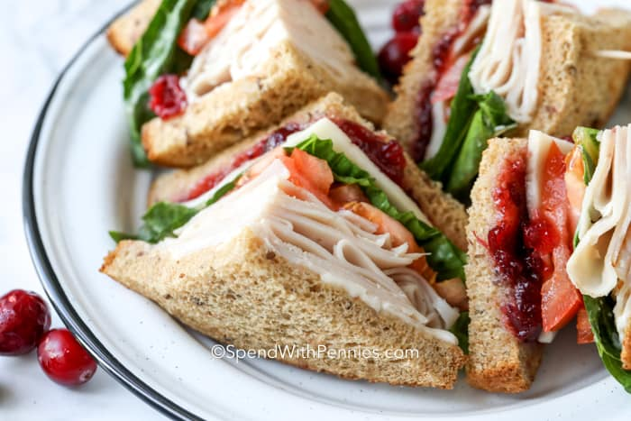

Turkey Sandwich
Turkey Sandwich

Description
Turkey sandwiches are a great meal for lunch. Turkey breast is high in protein and is lean in fat so it is an ideal meat for those looking to lose weight while also building some muscle
We can customize the sandwich with different toppings that will complete your delicious and healthy meal. Follow along with the ingredients and steps so that you can make a turkey sandiwch yourself!
Ingredients
- Sliced turkey breast
- Sliced cheese of your choice, I prefer muenster
- 2 slices of bread of your choice, I prefer multigrain
- Lettuce
- Mayonnaise
Steps
- Lightly spread mayonnaise on one side of both slices of bread
- Place generous amounts of sliced turkey breast on top of one slice of bread
- Place cheese and lettuce on top of turkey breast
- Place second slice of bread on top of everything